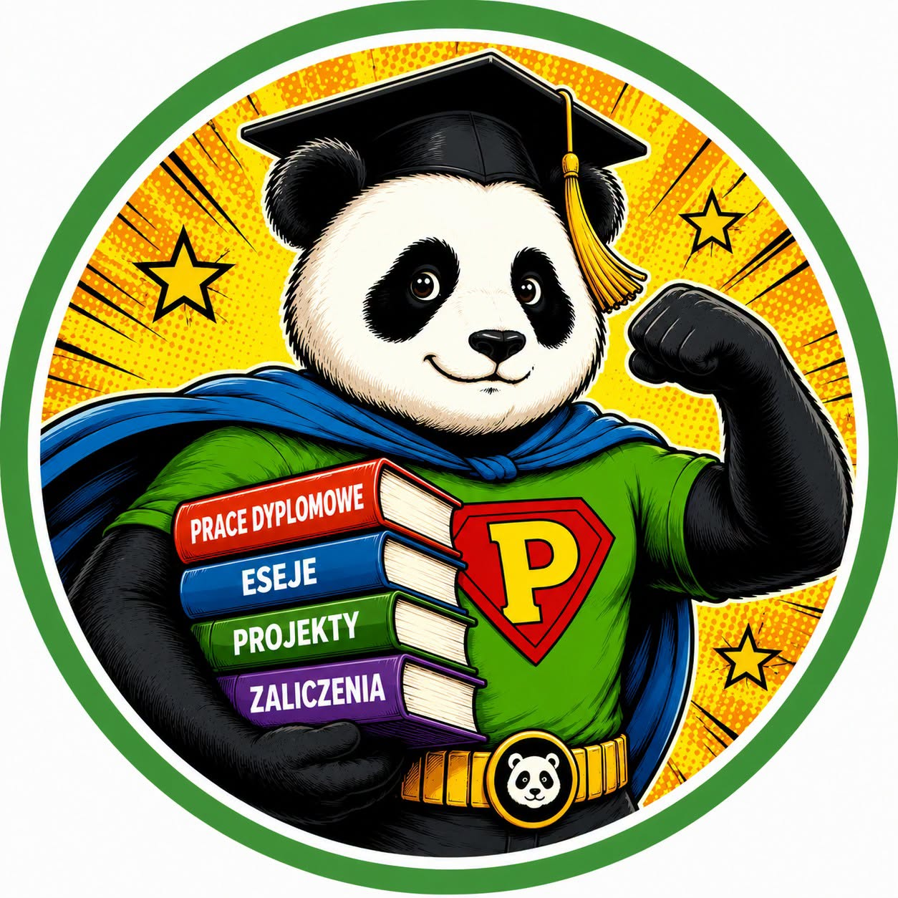

📚
Konsultacje akademickie
Pomoc w planowaniu pracy, strukturze, metodologii, doborze literatury, interpretacji wymagań oraz przygotowaniu do zaliczeń i obron.
Linki do Facebooka i Messengera uzupełnimy po przywróceniu fanpage'a.

Wsparcie edukacyjne i techniczne dopasowane do etapu projektu — od planu i metodologii po analizę wyników, redakcję i przygotowanie do prezentacji.
Pomoc w planowaniu pracy, strukturze, metodologii, doborze literatury, interpretacji wymagań oraz przygotowaniu do zaliczeń i obron.
Analizy statystyczne, biznesowe i techniczne, opracowanie ankiet i kwestionariuszy, tabele, wykresy oraz interpretacja wyników.
Korekta, redakcja, formatowanie, uporządkowanie materiałów oraz wsparcie przy raportach, prezentacjach i projektach.
Pomagamy w pracy z popularnym oprogramowaniem wykorzystywanym podczas studiów, badań i realizacji projektów.
Prosto i konkretnie — najpierw poznajemy zakres, potem ustalamy sposób wsparcia.
Napisz, czego dotyczy projekt, jaki jest zakres i termin.
Sprawdzamy wymagania i proponujemy odpowiednią formę wsparcia.
Potwierdzamy zakres konsultacji, materiałów lub analizy.
Pozostajemy w kontakcie i wspieramy Cię na ustalonym etapie.
Każde zapytanie analizujemy osobno, bez szablonowego podejścia.
Ustalamy realny zakres oraz sposób komunikacji przed rozpoczęciem współpracy.
Łączymy wsparcie akademickie z analizą danych, technologią i projektami.
W konsultacjach dotyczących struktury i metodologii, analizach statystycznych, redakcji i formatowaniu dokumentów, projektach oraz pracy ze specjalistycznym oprogramowaniem.
Tak. Oferujemy wsparcie edukacyjne i konsultacyjne przy pracach licencjackich, magisterskich i inżynierskich — od planu i metodologii po analizę wyników, redakcję i przygotowanie do prezentacji.
Napisz na teksty.panda.express@gmail.com i podaj temat, zakres potrzebnego wsparcia oraz termin. Po zapoznaniu się z materiałami ustalimy możliwy zakres pomocy.
Wiemy, że wiele osób nie wystawia opinii, bo nie chce, żeby kolega z roku, wykładowca, ciocia Grażyna albo przypadkowy człowiek z internetu zobaczył ich komentarz. 😅
Dlatego tutaj możesz wypowiedzieć się ANONIMOWO. 🥷
Nie będziemy pytać kim jesteś, skąd jesteś ani dlaczego pisałeś pracę o 23:57 dzień przed terminem. 🤫
Liczy się dla nas szczera opinia, a nie dane autora. Możesz napisać otwarcie, bez stresu i bez obawy, że ktoś będzie analizował Twój komentarz bardziej niż recenzent przypisy w pracy magisterskiej. 📚
Formularz jest przygotowany wizualnie. Po podłączeniu strony do hostingu można dodać automatyczne zapisywanie i publikowanie zatwierdzonych opinii.
Opisz krótko temat, zakres pomocy i termin. Odpowiemy na wiadomość e-mail.
Facebook i Messenger dodamy tutaj po utworzeniu oficjalnej strony Panda Expert.